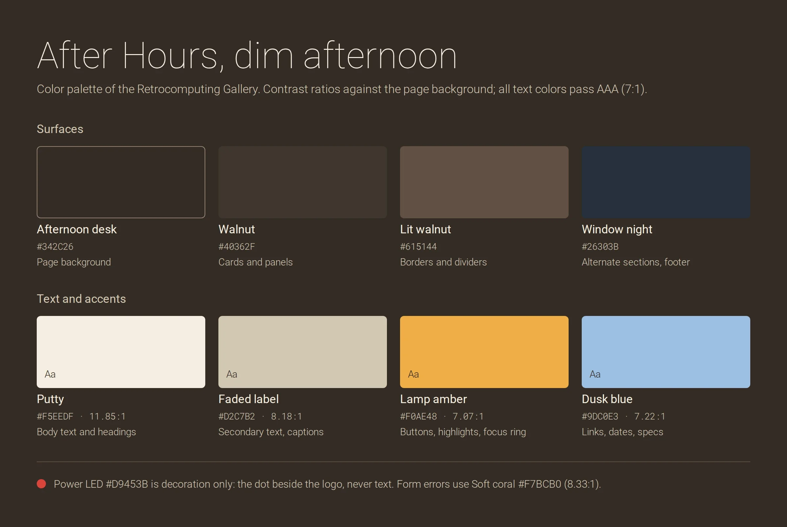
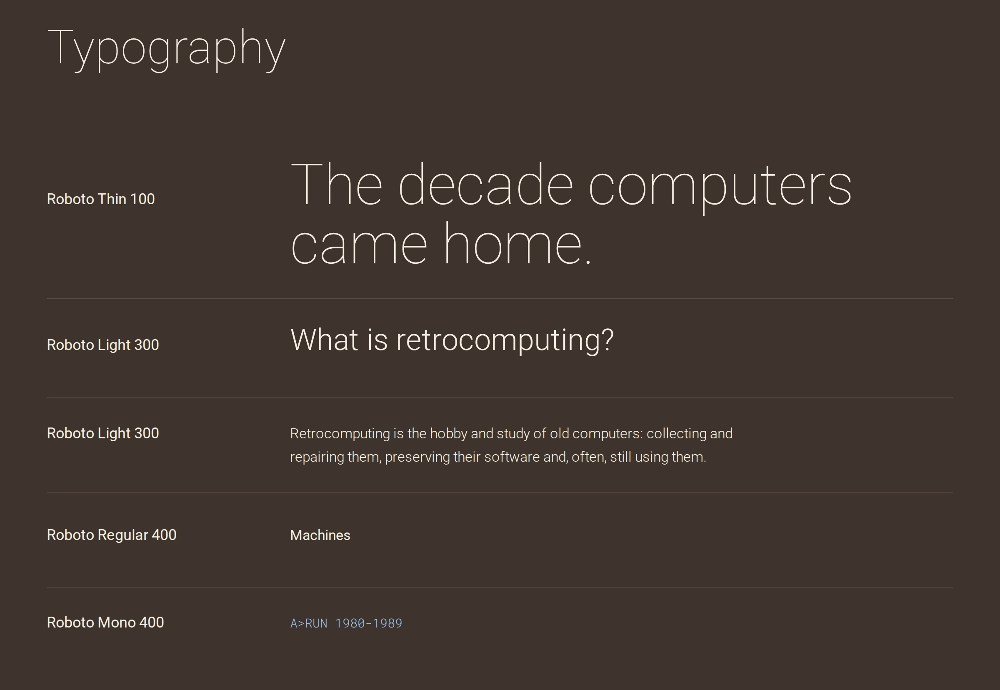

Site plan
The plan for the retrocomputing site project
Site name
The site is called The Retrocomputing Gallery.
Retrocomputing is the practice of using, restoring and studying computer hardware and software from earlier eras.
That word was chosen because it names the subject and is the term the community itself already uses, so a visitor knows what the site is about.
Gallery was added because machines and software are presented one piece at a time, each with a photo, a year, a maker and a short description, the way an exhibit is labelled.
The two words together describe both the topic and the way it is shown.
Purpose
The Retrocomputing Gallery is dedicated to showcasing some significant pieces of vintage computing technology, providing enthusiasts and researchers with a comprehensive resource for historical computing artifacts and information.
Period covered is 1980 to 1989.
Scenarios
Each question a visitor might bring and where it is (hopefully) answered.
| Question | Answered on |
|---|---|
| What is retrocomputing? | Home, intro section |
| What period of time does this site cover? | Home, intro section |
| What technologies were important milestones in that period? | Timeline, with links to Machines and Software |
| What companies were influential in that period? | Machines, Makers section, and tags on the Timeline |
| What are some notable computer models from that period? | Machines |
Site map
Five pages. Four are in the main navigation. Feedback is a utility page (to meet the form usage requirement).
| Page | File | Main content |
|---|---|---|
| Home | index.html | Hero, intro to retrocomputing and the period, three category cards |
| Machines | machines.html | Notable computers (including the Apple IIe) with photo, year, maker and specs; Makers section |
| Software | software.html | Operating systems, productivity programs, languages and games |
| Timeline (1980–89) | timeline.html | Year-by-year milestones tagged hardware, software or company |
| Feedback | feedback.html | Feedback form with validation and a thank-you message after sending |
Shared layout
- Header with logo and a four-item navigation that fits in one row on phones. (Should I consider using a hamburger menu?)
- Footer with site description, image credits, etc.
- Mobile first: one column on phones, two from 640 px, three from 1024 px; content width up to 1120 px.
Wireframe Sketches (Mobile and Desktop)
Home page structure

Colors
This must look like a dim lamp atmosphere: "Amber" is for actions and highlights; "Dusk Blue" is for links, dates and specs.

| Name | Value (Hex) | Where is it used |
|---|---|---|
| Afternoon desk | #342C26 | Page background |
| Walnut | #40362F | Cards, panels |
| Lit walnut | #615144 | Borders, dividers |
| Window night | #26303B | Alternate sections, footer |
| Putty | #F5EEDF | Body text, headings |
| Faded label | #D2C7B2 | Secondary text, captions |
| Lamp amber | #F0AE48 | Buttons, highlights, focus ring |
| Dusk blue | #9DC0E3 | Links, dates, specs |
| Soft coral | #F4A08F | Form error messages |
| Power LED | #D9453B | Logo dot only, never text |
Typography

| Style | Font and weight |
|---|---|
| Display (h1) | Roboto Thin 100 |
| Section heading (h2) | Roboto Light 300 |
| Card heading (h3) | Roboto Light 300 |
| Body | Roboto Light 300 |
| Navigation, buttons, labels | Roboto Regular 400 |
| Data: boot lines, dates, specs | Roboto Mono Regular 400 |